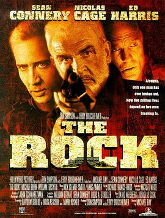

勇闯夺命岛 / The Rock
又名：石破天惊(港) / 绝地任务(台)
作品信息
| 导演 | 迈克尔·贝 |
| 编剧 | 大卫·韦斯伯格 / 道格拉斯·库克 / Mark Rosner |
| 主演 | 肖恩·康纳利 / 尼古拉斯·凯奇 / 艾德·哈里斯 / 约翰·斯宾塞 / 大卫·摩斯 / 威廉·弗西斯 / 迈克尔·比恩 / 瓦内萨·马赛尔 / 约翰·C·麦金雷 / Gregory Sporleder / 托尼·托德 / 博基姆·伍德拜因 / Jim Maniaci / 格雷格·科林斯 / 布伦丹·凯利 / 史蒂夫·哈里斯 / 丹尼·努齐 / 克莱尔·弗兰妮 / 托德·路易斯 / 大卫·鲍 / Dennis Chalker / Billy Devlin / 因格·内哈斯 / 约翰·拉夫林 / 哈利·哈姆弗瑞斯 / 霍华德·普拉特 / 威利·加森 / Thomas J. Hageboeck / 德怀特·希克斯 / 安东尼·克拉克 / 雷蒙德·奥康纳 / 路奈尔 / 山姆·惠普尔 / 汤姆·托尔斯 / 安东尼·吉德拉 / 吉姆·卡维泽 / 约翰·伊诺斯三世 / 布克·卡特里安 / 马修·詹姆斯·居尔布兰松 / 斯坦利·安德森 / 山德·贝克利 / 理查德·康蒂 / 雷蒙德·克鲁斯 / 里克·德拉辛 / 大卫·马歇尔·格兰特 / 菲利普·贝克·霍尔 / 迈克尔·罗斯 / 杰洛米诺·斯芬克斯 / Ezra Stanley / 凯文·韦斯曼 / 斯图亚特·维尔森 |
| 类型 | 动作 / 冒险 |
| 制片国家/地区 | 美国 |
| 语言 | 英语 |
| 上映日期 | 1996-06-07(美国) |
| 片长 | 136分钟 |
| IMDb | tt0117500 |
最后一次看到是 2026-08-01T11:06:53+10:00 · 豆瓣原页